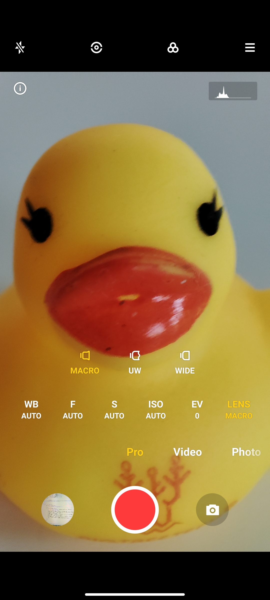
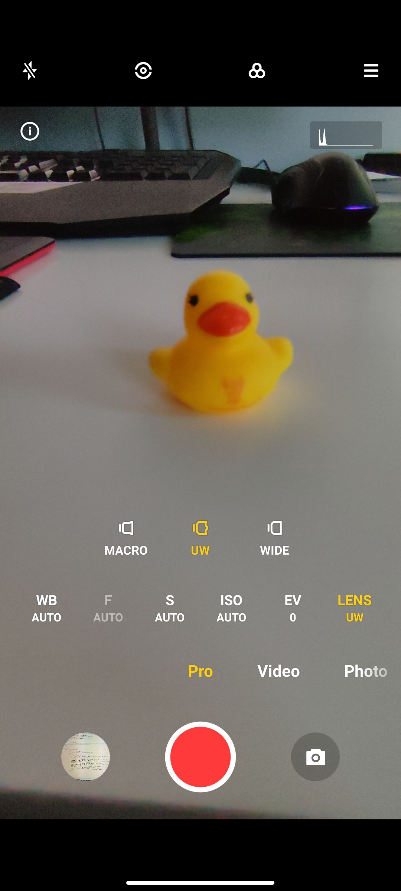
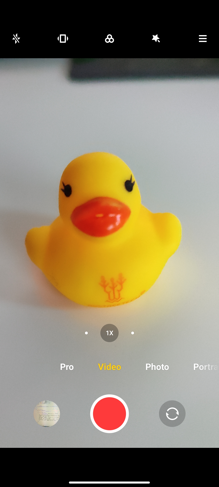
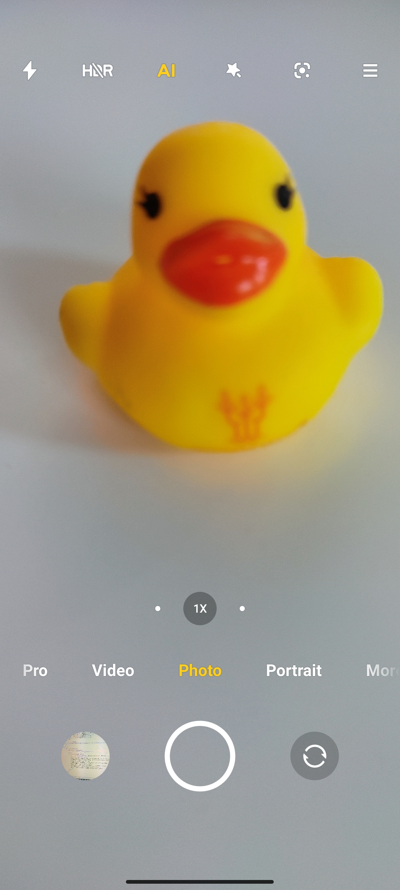

108MP pro mód
Macro kamera
Ultra Wide

Wide
Video kamera

Portrét mód
Základný foto mód
Vďaka štvorici objektívov môžete fotiť rôzne druhy fotografií, od bežných momentiek až po pôsobivé portréty. Hlavný objektív telefónu Xiaomi Redmi Note 10 Pro dokáže zhotovovať ostré fotky s bohatými detailmi s rozlíšením 108 Mpx. Širokouhlý objektív zaberá až 118° uhol, čo oceníte ak chcete do záberu dostať čo najviac objektov. S hĺbkovým a makro objektívom potom zaobstaráte krásne portrétne fotografie s bokeh efektom alebo makro snímky zblízka už od dvoch centimetrov. Na prednej strane Xiaomi Redmi Note 10 Pro nájdete v nepatrnom „priestrele“ v hornom rohu displeja 16 Mpx kameru pre selfie a videohovory.